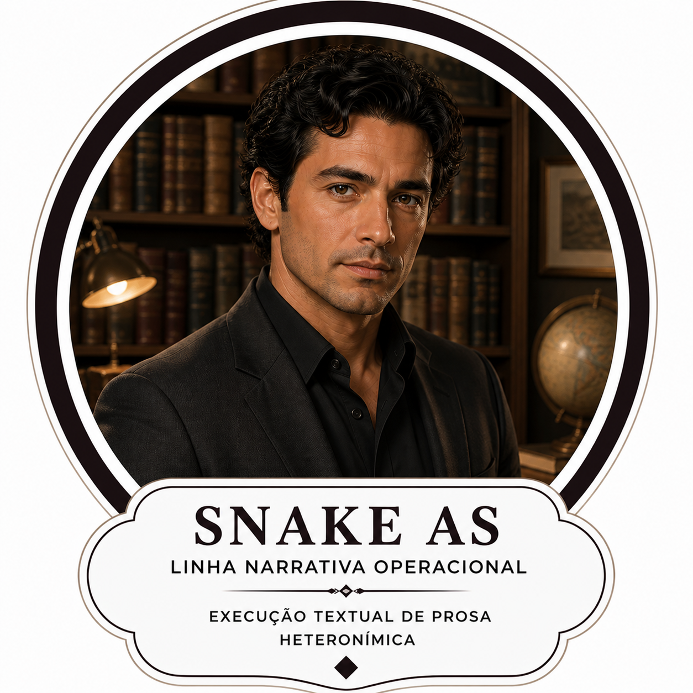

Eu sou Fernando Peçanha.
Estou aqui para guiar você na parte editorial.
Estou aqui para guiar você na parte editorial.
Biografias
Versão pública.
Livros
Catálogo editorial.
Amostras
Leitura de até 10 páginas.
Selos
Selos autorais e editoriais.

Senhorita Kaneta
Linha de prosa.

Snake As
Linha narrativa operacional.
Lonely Eagle
Linha poética operacional.

Senhor Pena
Mestre da linha poética.

A Corsi
Consolidação editorial.

Charlton Moisés Heston
Voz institucional e narrativa.